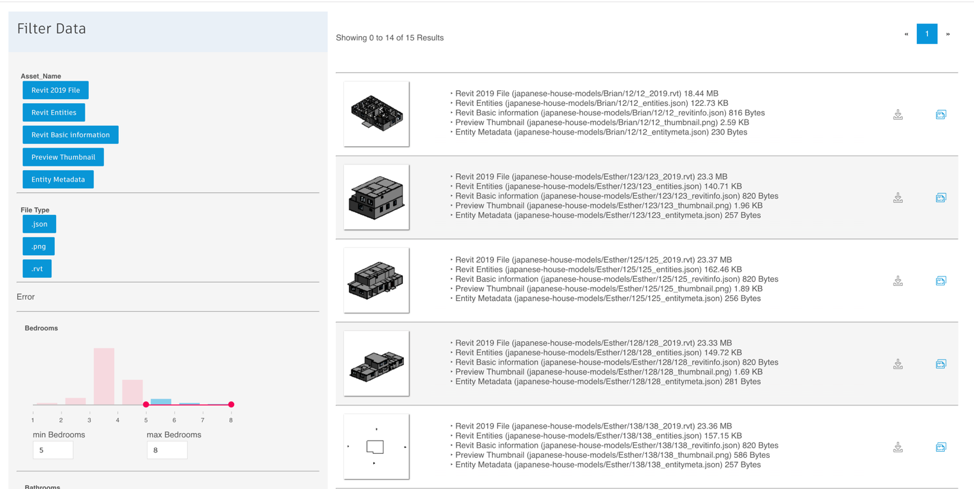
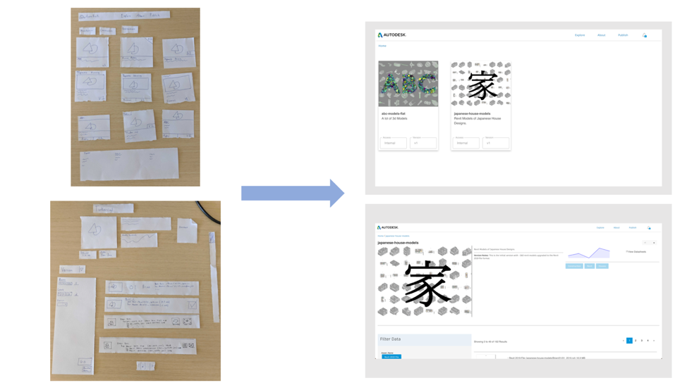
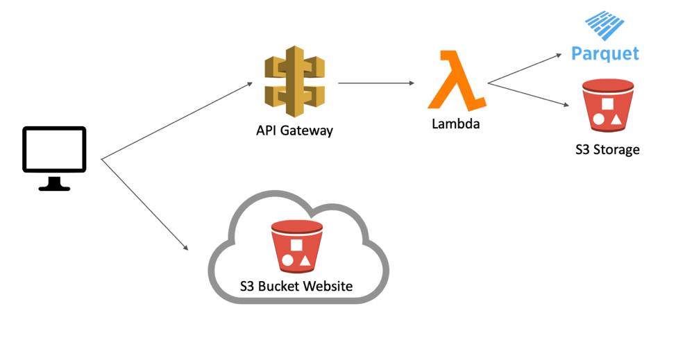

Autodesk Internship Summer of 2019
Hi, my name's Ethan Burrell, I'm a Junior EECS student at UC Berkeley. During the summer of 2019
I worked in Autodesk Research in the AI Lab as a AI Software Engineering Intern. This post chronicles
my work, which was building a system called DesignNet.
Autodesk Research has a unique challenge. Across many teams the division generates terabytes of data to train Machine Learning models on. Since Autodesk strives to build the most empowering software for its many customers over many industries, this data is primarily 3D data, in the file formats that our software uses. The large amount of data that Research generates allows enhancements in workflows and more advanced features for our future software. Despite having great value to the company there is no internal place to store, share, version, or search through this data. The goal for DesignNet is to deliver sophisticated data to researchers. This allows teams across Autodesk to work as one, sharing data and processes that empower small teams to create a large impact in our customers experience.

User and Dataset Research
There are two different types of users for DesignNet: a dataset author and dataset consumer. Authors are product teams and researchers who want to share an interesting dataset across the AI and ML community here at Autodesk. We also have dataset consumers, researchers who want to use a dataset for a project.
To account for the two types of users, the AI Engineering team built out a four piece system to handle the different actions made by different user types. There is a dataset authoring workflow, which introduces a new dataset to the system. After a dataset is successfully authored it starts the ingest pipeline which takes the new dataset and convert it to a knowledge structure that our systems can understand. The last 2 parts consist of a website and APIs that allow dataset consumers to search through the information.
For consumers to use a dataset, an author needs to publish it to DesignNet. This is done by the author specifying the structure of files of in the dataset. We have noticed underlying pattern in many of these datasets. The AI engineering team dubbed this “Item and Asset Structure.” As you can see in the Knowledge Graph for the Japanese Housing Dataset (seen below), an Item, depicted by an orange node, is a house in Japan. It is the parent of Assets, the green nodes, which are different types of data that make up the item. In the case of this dataset, a house is made up by a Revit file, a thumbnail and associated metadata stored in json files. A dataset author can define this “Item and Asset” structure so that DesignNet can successfully ingest the dataset.

When a dataset author wants to publish a dataset, they commit a Manifest, the description of the “Item and Asset Structure” to our Git repository. Then Our CI/CD merges it to master before deploying our ingest pipeline. Our ingest pipeline versions the files in the dataset and also automates batch file conversion, tagging objects from metadata, and thumbnail generation. If the dataset author chooses to upload another Manifest to our Git repository, the ingest system I wrote is able to store the new files in efficient way by not storing redundant files. Then our system allows dataset consumers to download and query this new version of the dataset.
Building the Application
For the MVP of DesignNet, the team wanted to have a web application that dataset consumers could filter and download data through.
We began by creating a paper prototype of the site.
I then built this into a static website using React. We had the design critiqued by a designer on a product team, as well I had my React code reviewed by a Full Stack Engineer.

Before building this out site out, I defined API endpoints that would fill the data on this website. These lambdas call DynamoDB tables that are populated with dataset information after the ingest process is run.

The website makes calls to an API Gateway Backend. This retrieval from our internal datastore is done by lambdas for high scalability. The DesignNet application is based around our core system, which stores Parquet files in S3 for fast querying of data. There’s an added bonus too; since Parquet is a database format that is stored in a file system, we can store these in S3 and read them in quickly using lambda. By doing this, the AI Lab does not have to pay to run an expensive Relational Data Store to keep track of the millions of files that are stored in our S3 bucket.
Including data storage, which is the most expensive part about our operation, we can run these services for ~3 dollars a day. As we scale up to have 5 or 6 datasets this will increase to be around 10 dollars a day.
I'd like to thank the AI Engineering Team for having me and teaching me so much about AWS, CI/CD, and general Software Development best practices.